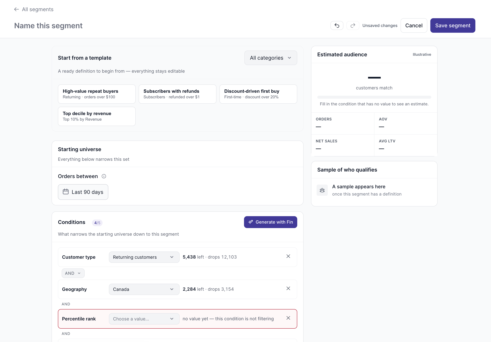
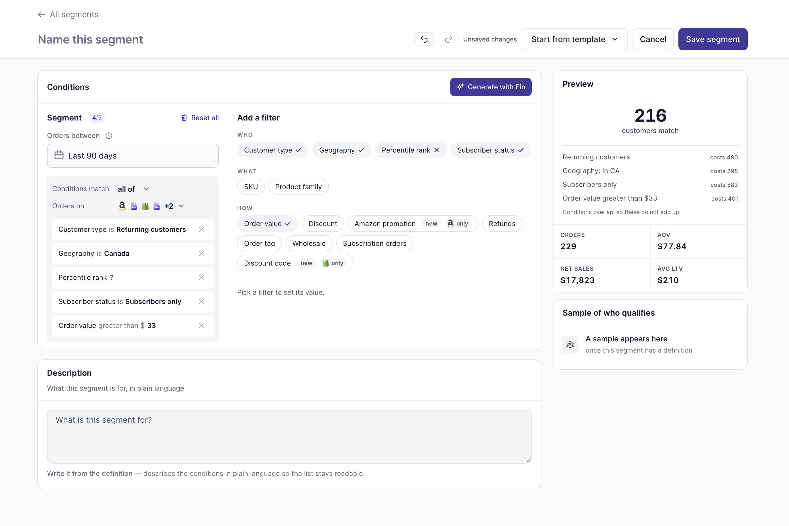

← All work
Product redesign
Customer segments: the best-looking rows were the broken ones
Five of the forty segments returned the entire customer base. They ranked first, because they carried the most revenue.
5/40segments returning the whole customer base
3reporting byte-identical numbers
855%what the revenue-share column summed to
28/29review points closed

The page as it stood
| Sortable column headers | 0 of 10 | → | every column |
| Search, filters, pagination, bulk select | none of the four | → | all four |
The word AND printed on one page | 58 | → | 1 selector |
| Table height | 4,837px | → | one screen of rows |
| Contrast of the “—” placeholder | 2.31:1 | → | passes AA |
Headings inside <main> | 0 | → | a real h1 |
Calls
- Sorted by what cannot be trusted The live product ranks the broken ones top, because revenue puts them there.
- Refused to fill empty rows with plausible numbers Eight segments never ran. They show no number.
- Removed “% of company revenue” Segments overlap; the column summed to 855%.
- Measured a layout, deleted it, withdrew my own review note Both aligned at the same left edge, sd 0px. My argument was wrong.
- No rank for empty segments, no confidence score Last place reads as a verdict. A made-up percentage reads as fact.
- Took the defect counts out of the headline The owner expects future data to have its own problems.
The conditions card, twice

AND row between every condition. One condition with no value, and the estimate goes blank.
AND rows. Filters beside the definition. Each condition costs a number you can compare: 480, 298, 583, 401, under a line saying they overlap and do not add up.Before the owner saw it
3review passes: analysis, usability, risk-based QA
48defects closed first
14assumptions surfaced, 12 questions written
0contrast failures at 375–1440px, at the review
Known gap
- The comparison page answers a different question than the live one Written into the handoff, not left to be found in build.
?variant=1 is what shipped,
?variant=2 is the rebuild.